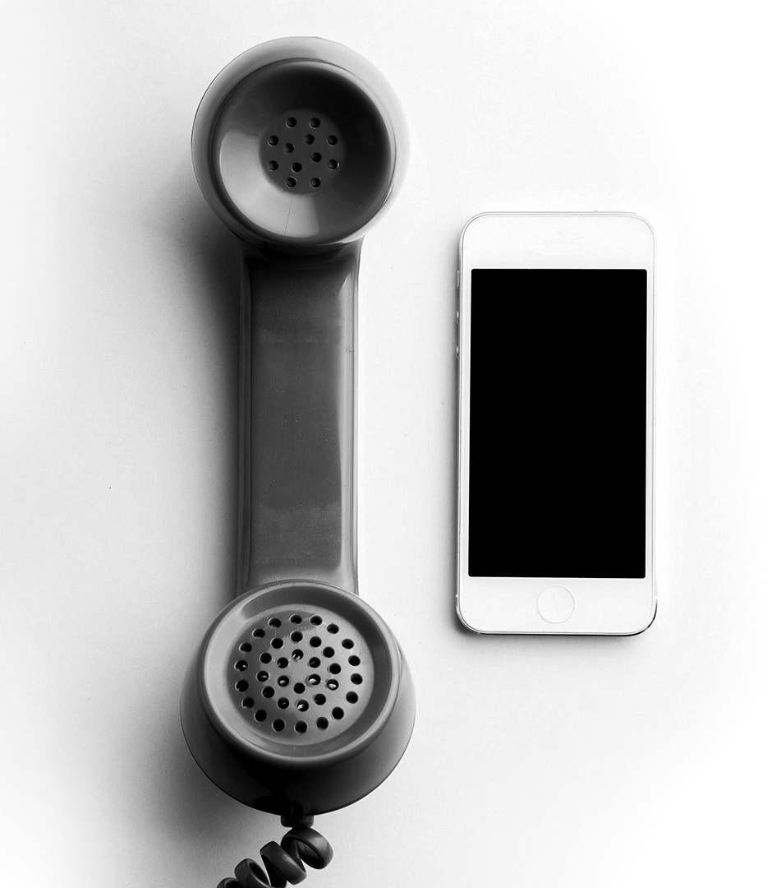

Il telefono è un dispositivo di telecomunicazione di tipo elettrico / elettronico dotato di un microfono e di un ricevitore che permette a chi lo utilizza di comunicare (parlare e ascoltare) a distanza verso chi utilizzi un dispositivo analogo.
Evoluzione tecnologica sono i telefoni cellulari e gli smartphone, questi ultimi consentono di navigare su Internet, in quanto le schede SIM da essi utilizzati possono utilizzare il traffico dati.
L'invenzione del telefono
Antonio Meucci è considerato a tutti gli effetti l’inventore del telefono. Nel 1871 ha brevettato un apparecchio, chiamato telettrofono, che permetteva di comunicare a distanza. Già nel 1854 Meucci aveva costruito il primo prototipo di telefono. A causa delle precarie condizioni economiche, Meucci non era riuscito a brevettare prima il telettrofono. Nel 1871 ha fondato, insieme ad altri finanziatori italiani, la Telettrofono Company, ma è riuscito ad ottenere per la sua invenzione soltanto un brevetto temporaneo, che doveva essere rinnovato ogni anno al prezzo di 10 dollari. Meucci è riuscito a rinnovarlo solo per 2 anni, fino al 1873. Per ottenere un brevetto standard avrebbe dovuto pagare 287 dollari.
Meucci ha poi provato a proporre l’invenzione a una compagnia telegrafica di New York. Il 7 marzo 1876 Alexander Graham Bell, che probabilmente aveva visto il progetto di Meucci, ha depositato il brevetto, attribuendosi così la paternità del telefono. Meucci lo ha poi denunciato, ma ha perso la causa: secondo il giudice il telefono brevettato da Bell era elettrico, mentre quello di Meucci solo meccanico. Soltanto l’11 giugno 2002 il Congresso degli Stati Uniti ha riconosciuto il contributo di Meucci nell’invenzione del telefono
I primi telefoni
Il primo modello di telefono consisteva in un microfono (trasmettitore) e un altoparlante (ricevitore), collegati da un circuito elettrico con una batteria in serie e per molto tempo rimase privilegio di pochi. Era usato soprattutto per “lavoro” e gli abbonati potevano comunicare solo con utenti della stessa rete urbana. I primi telefoni sono definiti più precisamente “dispositivi acustici meccanici“. Invece di trasformare l’energia audio in energia elettrica, questi dispositivi trasmettevano semplicemente dati vocali meccanicamente, come una voce metallica
Uno degli esempi più noti di questa tecnologia è chiamato telefono del barattolo di latta, noto anche come telefono dell’amante. Sono gli stessi tipi di “telefoni” che hai creato nella scuola elementare quando eri più giovane: colleghi due lattine (o “diaframmi”) usando una corda o un filo teso. Le vibrazioni meccaniche della tua voce viaggiano lungo il filo prima di

Il telegrafo, il telefono, la radio e soprattutto il computer hanno fatto sì che chiunque, in qualsiasi parte del mondo, si trovi ora nella condizione di essere a portata d’orecchio. Purtroppo, il prezzo da pagare per questo è la perdita di privacy
“Steven Levy”
Dalle cabine alle case
Solo dopo la prima guerra mondiale il telefono inizia a entrare nelle case. In Italia, nel 1923 cinque concessionarie private (Stipel, Telve, Timo, Set, Teti) si spartiscono l’utenza. Anche la “forma” comincia a cambiare: diventa più compatta e nasce la “cornetta”.I Posti di Telefonia Pubblica sono ormai diffusi in tutto il mondo con cabine telefoniche di varie fogge. Solo dagli anni Cinquanta però inizia il vero e proprio boom. Tra i ‘70- ‘90 arrivano la tastiera e gli accessori - segreteria telefonica, fax, cercapersone, vivavoce, rubrica. E i cellulari, che in realtà erano stati inventati già nel 1947, anche se il primo prototipo fu presentato da Martin Cooper, pare ispirato da Star Trek, il 3 aprile 1973

30 anni di telefoni cellulari
La storia dei telefoni cellulari inizia il 3 aprile 1973 quando l’ingegnere senior che lavorava per Motorola Martin Cooper ha usato un cel- lulare per chiamare un potenziale concorrente nel mercato della telefonia mobile. Questa è stata la prima chiamata da un telefono cellula- re mai fatta. Il telefono pesava 1,1 kg, le dimensioni del te- lefono con cui Cooper ha effettuato la chiama- ta erano di 228,6 millimetri, 127 millimetri per 44,4 millimetri. È stato un prototipo che impie- gava circa dieci ore per caricarsi con cui eri in grado di parlare per 30 minuti. 10 anni dopo, nel 1983, il Motorola DynaTAC 8000X è comparso sul mercato con un costo di poco più di €3.000. È stato il primo nella storia dei telefoni cellulare ad essere rilasciato commercialmente offrendo 30 minuti di con- versazione, con la possibilità di memorizzare 30 numeri con un tempo di attesa di 6 ore. Di- verse versioni sono state fatte tra il 1973 e il 1983. Le dimensioni e il peso dei prodotti sono stati ridotti e in aggiunta alla tipica tastiera te- lefonica a 12 tasti, aveva dei tasti speciali per la memorizzazione, l’invio, richiamata, blocco, volume. Non vi è dubbio che nei primi giorni il marke- ting dei telefoni cellulari era rivolto a impren- ditori di successo e ai più ricchi. I consuma- tori sono stati così impressionati dal concetto di essere sempre accessibili con un telefono portatile che le liste di attesa sono stati a mi- gliaia, nonostante il prezzo iniziale elevato. Tra il 1990 e il 1995, come la tecnologia avanza, la portabilità e il design dei telefoni cellulari vengono messi a disposizione dei consumatori medi e per la fine del 1990 sono diventati la norma piuttosto che l’eccezione.
1997: nokia e clamshel
Nel 1898, Eduard Polon fonda Finnish Rubber Works, produttore di prodotti in gomma, che in seguito divenne Finnish Rubber Nokia. All’inizio del 20° secolo, Finnish Rubber Works stabilisce le sue fabbriche vicino alla città di Nokia, in Finlandia, e inizia ad usare Nokia come marchio dei propri prodotti. Alla fine del 1980 l’azienda decide di concentrarsi esclusivamente sui segmenti in più rapida crescita nel settore delle telecomunicazioni, principalmente i telefoni cellulari.Nokia era saltato sul carro come un serio concorrente di Motorola, ma i telefoni non erano più competitivi. Messa a disposizione del pubblico nel 1989, Nokia offre la sua Mobira Cityman900, un portatile di peso di soli 800g rappresentando un enorme miglioramento rispetto al rilascio in precedenza del modello “simil mattone”
Il Motorola StarTAC era popolare anche nel 1997. L’ispirazione per il suo design è venuto dal comunicatore di Star Trek e ha aperto la strada al primo cellulare a conchiglia nel mondo, 60 milioni di StarTACs sono stati venduti. Lo StarTAC è rimasto popolare fino agli inizi del 2000, apparendo in molti film di Hollywood di quel periodo, come 8 millimetri con Nicolas Cage.
1999: il Blackberry
Nel 1999 il primo Blackberry è entrato a far parte della storia dei telefoni cellulari, prodotto da una società che sarebbe stata incoronato con la più rapida crescita sulla terra – Research in Motion Limited (RIM) 10 anni dopo ha rilasciato il Blackberry 850.Il BlackBerry 850 è stato uno dei primi dispositivi mobili rilasciati sotto il marchio BlackBerry. Il dispositivo di comunicazione mobile ha una tastiera completa, che era inusuale per l’epoca. Poteva inviare messaggi, e-mail, inviare e ricevere pagine e agire come un organizzatore di base. Il BlackBerry 850 aveva un piccolo schermo che può visualizzare soli otto righe di testo. Nei tre mesi successivi dal suo annuncio RIM è salita del 50 per cento a partire da poco più di $22 a circa $33,50
2000: la prima fotocamera
Il primo telefono cellulare con fotocamera è stato introdotta commercialmente in Giappone con il J-SH04 dalla Sharp Corporation nel novembre 2000. Al prezzo di $500 US, il J-SH04 aveva una risoluzione di 110 000 pixel (0,1 megapixel), uno schermo LCD a colori, accesso a Internet con un solo tocco e un altoparlante.
2002: schermo a colori
Nei giorni prima che la Samsung ottenesse il predominio mondiale hanno rilasciato, nel 2002, l’SGH-T100, il primo telefono cellulare utilizzando un display a transistor LCD a matrice.
Questo è stato davvero l’inizio di una nuova generazione di grandi schermi a colori a risoluzione più elevata. Il multimediale ha assunto una nuova dimensione da questo punto in poi. Non solo uno schermo luminoso, chiaro e colorato, ma anche abbastanza grande a 128×160 pixel. Samsung è stato una dei primi produttori di display LCD al mondo al momento.
Il telefono cellulare ha avuto anche delle suonerie polifoniche. Ciò significa che il sistema audio ha più voci separate, ciascuna capace di creare un suono diverso allo stesso tempo. Questo permette al telefono di creare suoni musicali di qualità molto migliore.
2004: sottile
Il Motorola Razr V3. Il telefono più venduto a conchiglia sul pianeta, con una vendita di 130 milioni di unità nel 2004-2006. Fu inizialmente commercializzato come un telefono esclusivo alla moda e aveva il profilo più sottile del momento.

2005: internet wifi
Nel 2005 il rivoluzionario Blackberry 7270 è apparso con il Wi-Fi che porta a una dipendenza che è stato scherzosamente definito “CrackBerry”. Con la disponibilità di Internet sui telefoni cellulari le persone sono diventate dipendenti dai loro telefoni cellulari Blackberry, controllavano la posta elettronica mentre si lavavano i denti o al tavolo da pranzo – non è poi così diverso oggi vero?

2008: apple entra nella storia
Nel 2008 l’iPhone 3G di Apple con la sua tecnologia pionieristica ha cambiato il modo in cui percepiamo i telefoni cellulari per sempre. L’interfaccia touchscreen su iPhone è diventata la progettazione di scelta e le sue applicazioni erano così popolari che nel 2010 Apple ha venduto 50 milioni di iPhone e al giorno d’oggi non è insolito vedere delle vendite superiori a 30.000 al mese. Ci sono, naturalmente, molti altri produttori di telefoni cellulari che hanno basato i loro design su iPhone di Apple, e la tecnologia sta progredendo così velocemente che chissà quale modello alla moda del prossimo anno ci sarà? .
Steve Jobs, il CEO di Apple, salì sul palco del Moscone Center di San Francisco per presentare al mondo il primo iPhone

2014: connessione totale
L’evoluzione tecnologica nel settore dei cellulari ha avuto una crescita esponenziale negli ultimi anni, e anche guardando indietro a pochi anni fa sembra di vedere un’altra epoca tecnologica. I primi Iphone sembrano ormai preistoria e ormai sono presenti sul mercato tantissimi modelli di smartphone, per accontentare le esigenze di tutti. Ma non saranno soltanto i cellulari a far parte del nostro futuro. Sempre più oggetti saranno interconnessi tra loro e la nostra vita non sarà più la stessa. Basta pensare a quello che sono e saranno i Google Glass, oppure alla sempre maggiore diffusione degli Iwatch. Gli smartphone saranno quindi solo una parte di un sistema sempre più vasto e complesso, che ci permetterà di rimanere sempre connessi e di poter condividere tutto in modo sempre più veloce.
Tutte queste possibilità di essere connessi e soprattutto la mole sempre maggiore di dati che necessitano di essere scambiati per poter usufruire al meglio di tutte le possibilità offerte da questi prodigi tecnologici hanno bisogno di una rete adeguata.Non sempre infatti è a disposizione una rete wifi veloce e soprattutto non sempre c’è un’adeguata copertura offerta dagli operatori ditelefonia mobile. Questa scarsa copertura si verifica soprattutto lontano dai centri abitati, dove sempre più spesso non si riesce nemmeno ad effettuare una telefonata, e quindi per esempio uno strumento innovativo come i Google Glass sarebbe del tutto inutile.